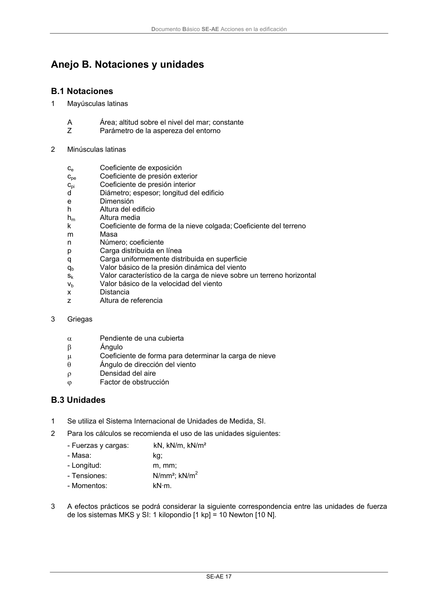
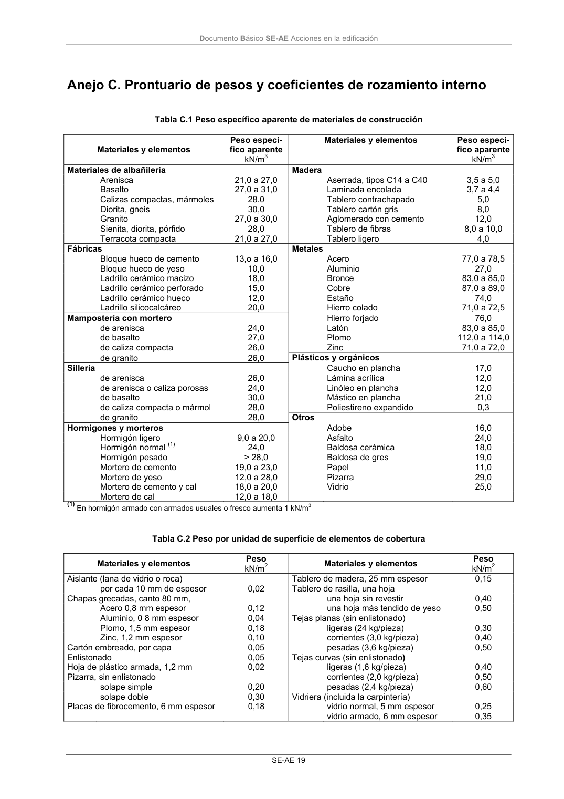

DB-SE-AE · Fragmento de PDF p21 · versión 2009-04 · capa oficial
Formatos: JSON compacto · Markdown · PDF fuente
Ámbito del documento · texto del ámbito · documento y tablas
ID técnico a0038 · PDF pág. 21-23 · jerarquía no validada por persona · no es capítulo: sin_linea_de_encabezado · padre: raíz · literal original en el contenido: «B.3 Unidades»
B.3 Unidades 1 Se utiliza el Sistema Internacional de Unidades de Medida, SI. 2 Para los cálculos se recomienda el uso de las unidades siguientes: - Fuerzas y cargas: kN, kN/m, kN/m² - Masa: kg; - Longitud: m, mm; - Tensiones: N/mm²; kN/m2 - Momentos: kN·m. 3 A efectos prácticos se podrá considerar la siguiente correspondencia entre las unidades de fuerza de los sistemas MKS y SI: 1 kilopondio [1 kp] = 10 Newton [10 N]. Documento Básico SE-AE Acciones en la edificación SE-AE 19


PDF fuente redistribuible: copia fiel enlazada en esta página (SHA256 verificado).